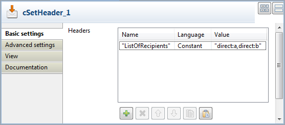
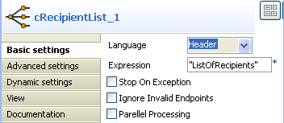
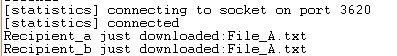

|
Famille de composant |
Routing | |
|
Fonction |
Le composant cRecipientList est conçu pour router des messages vers un nombre de destinataires spécifiés dynamiquement. | |
|
Objectif |
Le cRecipientList vous permet de router des messages vers un nombre de destinataires dynamiquement spécifiés. | |
|
Basic settings |
Language |
Sélectionnez dans la liste le langage de l'expression à saisir. |
|
|
Expression |
Saisissez l'expression retournant de multiples endpoints. |
|
|
Stop On Exception |
Cochez cette case pour arrêter immédiatement le traitement lorsqu'une exception survient. |
|
|
Ignore Invalid Endpoints |
Cochez cette case pour ignorer les endpoints invalides. |
|
|
Parallel Processing |
Cochez cette case pour envoyer simultanément le message aux différents destinataires. |
|
Utilisation |
En tant que composant intermédiaire, le cRecipientList vous permet de router des messages vers un certain nombre de destinataires dynamiquement spécifiés. | |
|
Limitation |
n/a | |
Dans ce scénario, un composant cRecipientList est utilisé pour router un message vers une liste de destinataires.
Pour construire la Route, procédez comme dans les sections suivantes.
Glissez-déposez les composants de la Palette dans l'espace de modélisation graphique : un cFile, un cSetHeader, un cRecipientList, deux cMessagingEndpoint et deux cProcessor. Renommez le composant cFile en Read_Input. Changez le nom des deux cMessagingEndpoint en Recipient_A et Recipient_B, respectivement. Renommez les deux composants cProcessor en Print_File_Name_A et Print_File_Name_B, respectivement.
Reliez le Read_Input au cSetHeader à l'aide d'un lien Row > Route.
Reliez le composant cSetHeader au cRecipientList à l'aide d'un lien Row > Route.
Reliez le Recipient_A au composant Print_File_Name_A à l'aide d'un lien Row > Route.
Reliez le Recipient_B au Print_File_Name_B à l'aide d'un lien Row > Route.
Double-cliquez sur le composant cFile pour ouvrir sa vue Basic settings.

Dans le champ Path, saisissez le chemin d'accès au message source message, par exemple "E:/data/input". Laissez les autres paramètres tels qu'ils sont.
Double-cliquez sur le cSetHeader pour ouvrir sa vue Basic settings.
Cliquez sur [+] pour ajouter une ligne au tableau Headers.
Dans le champ Name, saisissez le nom de l'en-tête, par exemple "ListOfRecipients".
Dans la liste déroulante Language, choisissez Constant.
Dans le champ Value, saisissez les URIs des endpoints, par exemple "direct:a,direct:b".
Double-cliquez sur le cRecipientList pour ouvrir sa vue Basic settings.
Dans la liste Language, sélectionnez Header.
Dans le champ Expression, saisissez le nom de l'en-tête contenant la liste des destinataires, "ListOfRecipients".
Double-cliquez sur le composant Recipient_A pour ouvrir sa vue Basic settings et définir l'URI du destinataire A.

Effectuez la même opération pour le composant Recipient_B et saisissez l' URI du destinataire B.
Double-cliquez sur Print_File_Name_A pour ouvrir sa vue Basic settings. Dans le champ Code, saisissez le code ci-dessous pour afficher le message reçu par le composant Recipient_A.
System.out.println("Recipient_a just downloaded:"+exchange.getIn().getHeader("CamelFileName"));
Effectuez la même opération pour le Print_File_Name_B et saisissez le code ci-dessous dans son champ Code :
System.out.println("Recipient_b just downloaded:"+exchange.getIn().getHeader("CamelFileName"));Appuyez sur Ctrl+S pour sauvegarder votre Route.
Cliquez sur l'onglet Code au bas de l'espace de modélisation graphique pour visualiser le code généré.

Comme affiché ci-dessus, la route obtient le message de
Read_Inputet configure les en-têtes (.setHeader("ListOfRecipients")) des destinataires, à l'aide de.constant("direct:a,direct:b"). LecRecipientList_1lit l'en-tête (.header("ListOfRecipients")) et route le message aux destinataires qu'il contient.Appuyez sur F6 pour exécuter la Route.
Ce message est envoyé aux destinataires inclus dans l'en-tête.
